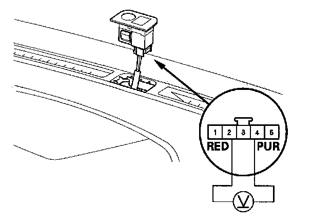

Sunlight Sensor Test
Sunlight Sensor Test1. Remove the sunlight sensor from the dashboard.
2. Connect the sunlight sensor 5P connector.

3. Turn the ignition switch ON (II). Measure the voltage between the terminals with the (+) probe on the No. 4 terminal and the ( - ) probe on the No. 2 terminal with the connector connected.
NOTE: The voltage readings will not change under the light of a flashlight or a fluorescent lamp.
Voltage should be:
- 3.6 - 3.7 V or more with the sensor out of direct sunlight.
- 3.3 - 3.5 V or less with the sensor in direct sunlight.
4. If the voltage is not as specified, replace the sunlight sensor.